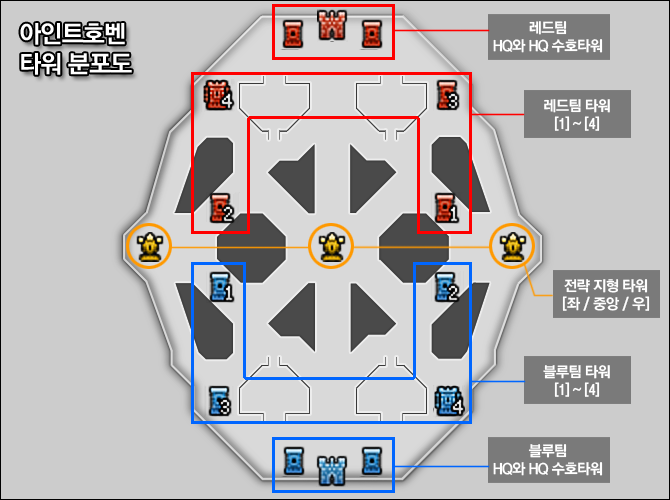
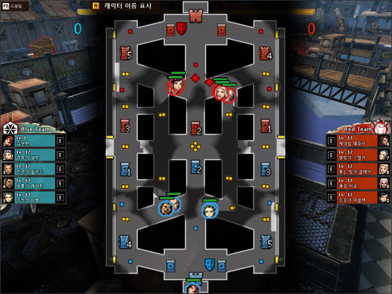

History of Cyphers
Cyphers was officially released by Neople on June 30, 2011, with publishing support from Nexon.
This game has been praised for pioneering a unique and enjoyable genre by incorporating elements of fighting games into the traditional MOBA format.
Despite having been released for a long time, it has become one of the long-running online games in South Korea, with a relatively small but dedicated and loyal player community.
Rules and Gameplay of Cyphers
Cyphers matches take place on a variety of maps, but essentially pit two teams of five players against each other. Each player controls a character with unique abilities, called a Cypher. Team must work together to strategically defeat the enemy team and achieve the goal of destroying the opposing HQ.
Tips and Strategies for Winning in Cyphers
1. Adjust your champion selection and strategy based on the composition of the enemy team.
2. Know the map by keeping an eye on enemy movements on the minimap.
3. Farm Rips, a neutral monster, to earn gold to buy items and enhance your character.
5. Neutral target called Trooper spawn at regular intervals. Defeating them gives you a significant advantage, so coordinate with your teammates to challenge them at the right time.
*MOST IMPORTANT!*
Cyphers is a team game. Communicate with your team and coordinate your actions.
